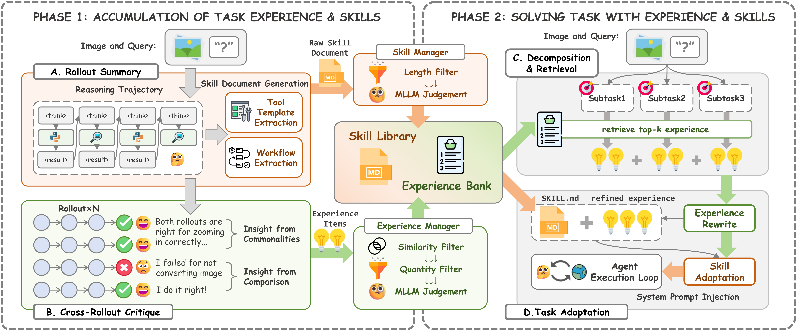
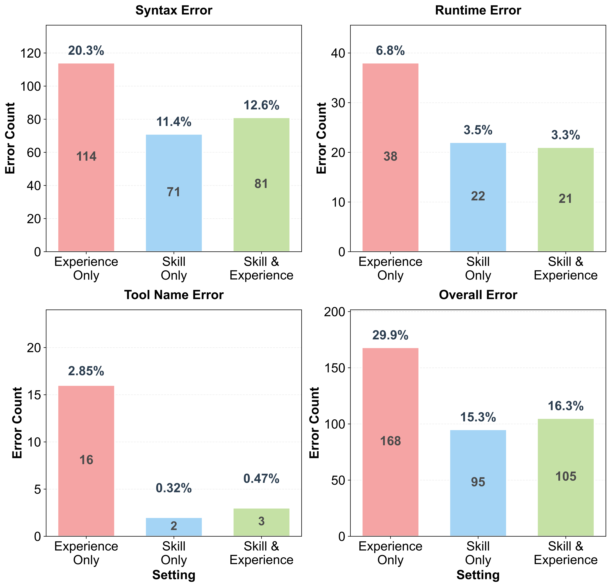
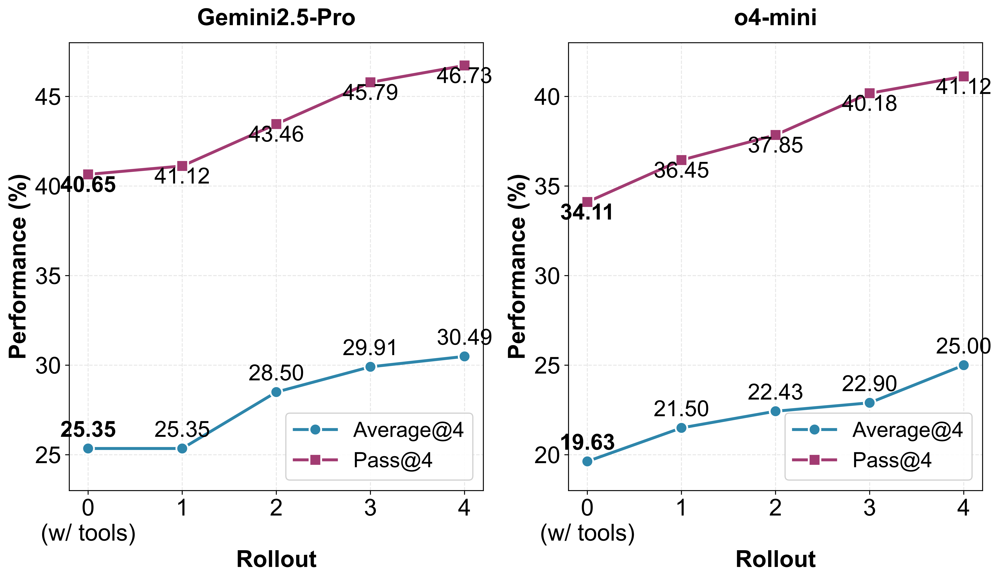
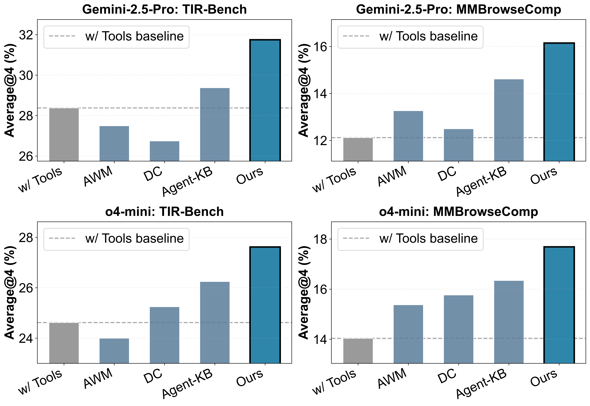

Multimodal agents demonstrate impressive problem-solving capabilities but typically operate in isolated episodes without leveraging past experiences. Recent methods address this through dynamic retrieval of textual insights or predefined skill documents, yet face critical challenges: visual modalities are neglected during knowledge extraction, stored insights lack executable structure, and manually crafted skills fail to scale. We propose XSkill, a framework combining task-level Skills (structured workflows and tool templates) with action-level Experiences (context-specific tactical insights) through automated accumulation from agent trajectories. Our approach employs visually-grounded summarization to extract knowledge integrating visual observations and textual reasoning, hierarchical consolidation to maintain quality and diversity, and context-aware adaptation to tailor knowledge to current visual contexts. Evaluated on diverse benchmarks requiring visual tool use and multimodal search, XSkill achieves average gains of 2.58 to 6.71 points over strong baselines across different backbone models, with superior zero-shot transferability and strategic improvements in tool selection and execution accuracy. These results demonstrate that our framework enables transferable continual learning for multimodal agents in real-world scenarios without parametric training, offering broad application for practical deployment.
XSkill operates in two phases. Phase I (Accumulation): the agent distills structured skill documents and experience items from multi-path trajectories via rollout summary, cross-rollout critique, and hierarchical consolidation to address the bottlenecks of inefficient tool use and inflexible orchestration. Phase II (Inference): the system decomposes the test task, retrieves relevant knowledge, adapts it to the current visual context, and injects it into the prompt of the agent.

Overview of the XSkill framework. Phase I (left): Knowledge accumulation via rollout summary (A), cross-rollout critique (B), and hierarchical consolidation into the Skill Library and Experience Bank. Phase II (right): Task decomposition and retrieval (C), context-aware adaptation (D), and injection into the prompt of the agent.
A Skill k = (ℳ, 𝒲, 𝒫) is a task-level guidance document stored as structured Markdown, containing metadata, a workflow sequence, and reusable tool templates. Skills provide structured task-level guidance for a specific class of problems.
An Experience e = (c, a, ve) captures action-level tactical insights — triggering condition, recommended action, and a semantic embedding for retrieval. Experiences provide context-specific tips on execution contexts and failure modes.
We evaluate XSkill on five benchmarks across three domains: Visual Agentic Tool Use (VisualToolBench, TIR-Bench), Multimodal Search (MMSearch-Plus, MMBrowseComp), and Comprehensive (AgentVista). We compare against three state-of-the-art learning-from-experience baselines: Agent Workflow Memory (AWM), Dynamic CheatSheet (DC), and Agent-KB.
| Model | Method | VisualToolBench | TIR-Bench | MMSearch-Plus | AgentVista | Average | |||||
|---|---|---|---|---|---|---|---|---|---|---|---|
| Avg@4 | Pass@4 | Avg@4 | Pass@4 | Avg@4 | Pass@4 | Avg@4 | Pass@4 | Avg@4 | Pass@4 | ||
| Gemini- 2.5-Pro |
No Tools | 20.91 | 28.97 | 21.37 | 40.00 | 10.43 | 19.43 | 17.89 | 28.44 | 17.65 | 29.21 |
| w/ Tools | 25.35 | 40.65 | 28.38 | 54.00 | 21.56 | 35.55 | 20.18 | 33.94 | 23.87 | 41.04 | |
| AWM | 25.93 | 39.25 | 29.75 | 53.50 | 20.85 | 36.97 | 19.72 | 32.11 | 24.06 | 40.46 | |
| Dynamic CheatSheet | 24.77 | 37.38 | 27.62 | 51.00 | 24.64 | 40.76 | 21.79 | 35.78 | 24.71 | 41.23 | |
| Agent-KB | 26.75 | 41.12 | 29.13 | 52.50 | 23.22 | 37.91 | 20.87 | 33.94 | 24.99 | 41.37 | |
| XSkill (Ours) | 30.49 | 46.73 | 33.12 | 58.00 | 27.96 | 44.08 | 22.94 | 36.70 | 28.63 | 46.38 | |
| Gemini- 3-Flash |
No Tools | 25.12 | 36.92 | 28.50 | 54.00 | 16.47 | 24.64 | 18.35 | 29.36 | 22.11 | 36.23 |
| w/ Tools | 41.94 | 60.75 | 32.37 | 58.50 | 39.57 | 53.55 | 20.64 | 39.45 | 33.63 | 53.06 | |
| AWM | 41.94 | 59.35 | 34.25 | 62.50 | 43.36 | 54.98 | 19.50 | 37.61 | 34.76 | 53.61 | |
| Dynamic CheatSheet | 41.70 | 59.81 | 33.75 | 59.00 | 40.28 | 55.45 | 20.18 | 36.70 | 33.98 | 52.74 | |
| Agent-KB | 41.75 | 61.21 | 36.62 | 62.00 | 39.81 | 53.08 | 21.33 | 38.53 | 34.88 | 53.71 | |
| XSkill (Ours) | 46.50 | 64.02 | 47.75 | 75.00 | 43.72 | 56.40 | 23.39 | 40.37 | 40.34 | 58.95 | |
| GPT-5- mini |
No Tools | 13.90 | 22.90 | 20.00 | 46.50 | 3.08 | 6.64 | 18.58 | 28.44 | 13.89 | 26.12 |
| w/ Tools | 24.30 | 37.85 | 23.50 | 50.50 | 14.22 | 20.38 | 20.41 | 35.78 | 20.61 | 36.13 | |
| AWM | 23.25 | 34.58 | 24.25 | 53.00 | 14.81 | 20.85 | 19.04 | 34.86 | 20.34 | 35.82 | |
| Dynamic CheatSheet | 23.83 | 35.05 | 24.50 | 53.50 | 13.74 | 18.48 | 21.10 | 36.70 | 20.79 | 35.93 | |
| Agent-KB | 24.77 | 38.32 | 25.13 | 53.00 | 13.63 | 19.91 | 19.95 | 34.86 | 20.87 | 36.52 | |
| XSkill (Ours) | 24.53 | 37.85 | 28.25 | 56.00 | 16.11 | 23.22 | 23.85 | 38.53 | 23.19 | 38.90 | |
| o4-mini | No Tools | 14.72 | 27.57 | 20.13 | 45.00 | 5.92 | 12.32 | 19.04 | 25.69 | 14.95 | 27.65 |
| w/ Tools | 19.63 | 34.11 | 24.62 | 49.50 | 15.88 | 21.80 | 18.12 | 29.36 | 19.56 | 33.69 | |
| AWM | 21.14 | 36.92 | 25.25 | 51.00 | 16.94 | 22.75 | 19.95 | 29.36 | 20.82 | 35.01 | |
| Dynamic CheatSheet | 20.44 | 33.64 | 25.50 | 52.00 | 14.57 | 22.27 | 18.81 | 28.44 | 19.83 | 34.09 | |
| Agent-KB | 22.78 | 36.92 | 24.75 | 52.50 | 15.17 | 20.38 | 19.50 | 31.19 | 20.55 | 35.25 | |
| XSkill (Ours) | 25.00 | 41.12 | 30.25 | 57.50 | 17.30 | 23.70 | 22.32 | 33.94 | 23.72 | 39.07 | |
Performance comparison (%) — Average@4 and Pass@4 over 4 independent rollouts.
Systematic ablation on VisualToolBench with Gemini-2.5-Pro. Removing either Experiences or Skills leads to drops of 3.04 and 3.85 points respectively. Phase I components (Experience Manager & Skill Manager) contribute more substantially than Phase II components (Task Decomposition & Adaptation), highlighting that accumulated knowledge quality is more critical than retrieval mechanism.
| Setting | Avg@4 | Pass@4 | Δ Avg@4 |
|---|---|---|---|
| Full Pipeline (Ours) | 30.49 | 46.73 | — |
| Experience & Skill Ablation | |||
| w/o Experience | 27.45 | 42.52 | −3.04 |
| w/o Skill | 26.64 | 41.12 | −3.85 |
| Phase I Ablation | |||
| w/o Experience Manager | 26.40 | 42.06 | −4.09 |
| w/o Skill Manager | 26.87 | 42.99 | −3.62 |
| Phase II Ablation | |||
| w/o Task Decomposition | 29.21 | 44.86 | −1.28 |
| w/o Task Adaptation | 28.97 | 44.39 | −1.52 |
| Baselines | |||
| w/ Tools | 25.35 | 40.65 | −5.14 |
| No Tools | 20.91 | 28.97 | −9.58 |
Transitioning from Experience Only to Skill Only reduces overall error rate from 29.9% (168 errors) to 15.3% (95 errors). Syntax errors drop from 114 (20.3%) to 71 (11.4%), tool name errors from 16 (2.85%) to just 2 (0.32%), and runtime errors from 38 (6.8%) to 22 (3.5%). These results show that skills provide a strong foundation for reliable tool use, directly addressing the problem of inefficient tool use.

Experiences substantially shift tool selection toward more targeted strategies. On VisualToolBench, code interpreter usage increases from 66.63% to 76.97% with the full pipeline. On MMSearch-Plus, image search grows from 15.43% to 23.89% while web search declines — reflecting learned preferences for specialized visual tools. This context-aware adaptation allows XSkill to achieve the flexible tool orchestration needed for complex multimodal tasks.
| Setting | Code | Search-W | Search-I | Visit |
|---|---|---|---|---|
| VisualToolBench | ||||
| w/ Tools | 66.63 | 31.70 | — | 1.66 |
| Skill Only | 65.96 | 31.10 | — | 2.82 |
| Exp Only | 74.49 ↑ | 22.03 ↓ | — | 2.56 |
| Skill & Exp | 76.97 ↑ | 21.12 ↓ | — | 1.58 |
| MMSearch-Plus | ||||
| w/ Tools | 6.18 | 71.07 | 15.43 | 7.32 |
| Skill Only | 7.94 | 67.07 | 17.87 | 7.12 |
| Exp Only | 13.21 ↑ | 56.12 ↓ | 24.63 ↑ | 6.04 |
| Skill & Exp | 14.37 ↑ | 55.08 ↓ | 23.89 ↑ | 5.66 |
Performance consistently improves as rollout count N increases from 1 to 4. Pass@4 exhibits steeper gains — more rollouts provide richer trajectory diversity for the cross-rollout critique mechanism to extract higher-quality experiences.

Knowledge accumulated on one benchmark generalizes to unseen benchmarks. Using VisualToolBench knowledge for TIR-Bench tasks, and MMSearch-Plus knowledge for MMBrowseComp, XSkill consistently outperforms all baselines with average improvements of 2–3 points over Agent-KB.

We walk through a real reasoning trajectory to illustrate how XSkill works end-to-end. The agent is given a car image and asked: "In what color area is the second 'GOOD' text on the car body located?" The correct answer is Purple. XSkill injects an accumulated skill document before execution, guiding the agent to use forensic pixel sampling rather than a subjective visual guess.
code_interpreter to extract pixel RGB data — an objective 'Hard Signature' avoiding lighting bias.import PIL.Image
def forensic_crop(img_path, box):
# box: [ymin, xmin, ymax, xmax] (0-1000)
with PIL.Image.open(img_path) as img:
w, h = img.size
l,t,r,b = (box[1]*w/1000, box[0]*h/1000,
box[3]*w/1000, box[2]*h/1000)
img.crop((l,t,r,b)).save("cropped_roi.png")To determine the color of the area behind the second "GOOD" text, I will follow a systematic approach guided by the skill.
code_interpreter to extract average pixel color — objective and lighting-invariant.box = [865, 800, 895, 870] # estimated ROI for 2nd "GOOD"
cropped_roi = original_image.crop(...)
average_rgb = np.mean(roi_array, axis=(0, 1))
# → (84, 59, 72) → Undetermined by simple thresholdAverage RGB: (84, 59, 72) — classified as Undetermined by the simple threshold; red is highest but not conclusively "red".
RGB (84, 59, 72) — red highest, blue second — is characteristic of a purple / magenta hue. Simple thresholding failed. Switching to HSV color space for a more reliable hue measurement. Also refining the bounding box to avoid reflections.
box = [860, 800, 880, 870] # refined bounding box
h_hsv, s_hsv, v_hsv = colorsys.rgb_to_hsv(r/255, g/255, b/255)
# → Hue = 258.1°, Sat = 0.58, Val = 0.36
# 240° ≤ 258.1° < 300° → Purple/VioletRGB: (54, 38, 91) | HSV Hue: 258.1° → falls in the Purple/Violet range (240°–300°).
The second "GOOD" text on the car body is located in a purple area.
Confirmed via forensic pixel sampling: RGB (54, 38, 91), HSV Hue 258.1° — Purple/Violet. ✓ Matches ground truth.
@misc{jiang2026xskillcontinuallearningexperience,
title = {XSkill: Continual Learning from Experience and Skills in Multimodal Agents},
author = {Guanyu Jiang and Zhaochen Su and Xiaoye Qu and Yi R. Fung},
year = {2026},
eprint = {2603.12056},
archivePrefix = {arXiv},
primaryClass = {cs.AI},
url = {https://arxiv.org/abs/2603.12056},
}